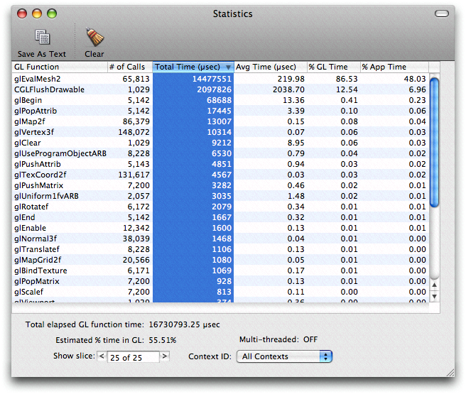
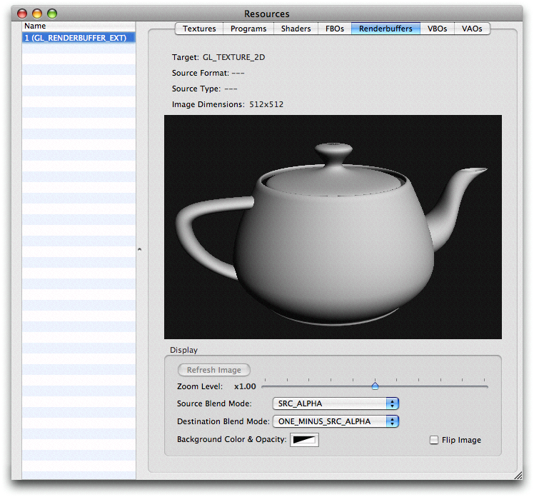

|
Getting StartedOpenGL Profiler is located at /Developer/Applications/Graphics Tools. The first time you open OpenGL Profiler, it will give you a choice to enable attaching to running applications as shown in Figure 1. If you click enable Profiler will set the Figure 1: Enabling Profiler Attaching. The Main Window launch or attachThere are 2 ways to analyze an application, by attaching to a running instance or by launching within Profiler. Launching an application with ProfilerThe main window with Launch application selected as shown in Figure 2 is where you can drag and drop your application bundle, or you can press the "+" button to add it in the open panel. Select the application name in the table, and press the Launch button to start the application. Also, you can click on the Launch Arguments field and add any arguments needed for the application prior to launching it. Once running you can start to see the instant and peak Frame Rate. The default update time of 5 secs for the frame rate display can be changed in the Preferences as shown in OpenGL Profiler Preferences. Note: The frame rate field is updated by counting Figure 2: Launching an application within Profiler. Attaching to a running applicationThere might be times when attaching to a running application is more convenient, and this can be done by selecting Attach to application , choosing the appropriate process and the clicking the Attach button as shown in Figure 3. Figure 3: Attaching to a running application. Note: If an error as shown in Figure 4 is presented at this time, the most likely cause is that the environment variable Figure 4: Launch or attach error Collecting an OpenGL call traceOnce you have launched or attached to an application, you can collect statistics and trace view of the OpenGL commands submitted by your application. To collect an OpenGL trace simply select Trace under the Views menu or press Command-Option-T. The trace view is very useful to analyze the sequence of operations as well as to identify redundant calls or state mishandling. Figure 5 shows a trace window with Lines #'s, Contexts and Timing information selected. Figure 5: Trace window. You can also collect backtraces by selecting Include Backtraces on the Profiler's main window. This will collect backtraces with function names, so you can see who is calling a particularly slow call by clicking on the function name as shown in Figure 6. You may right click on it and choose to view the original image in a new window or tab. Figure 6: Trace view with call stack Saving a Trace to a text fileThe call trace can be saved to a text file for post processing by clicking on Save As Text Traces can be long and might take some time to finish saving a text file which can get really large. With Line #'s, Context and Timing selected the generated text file looks like: 1: 0x00a2d400 0.18 µs glBegin(GL_QUADS); 2: 0x00a2d400 0.08 µs glTexCoord2f(0.025, 0.025); 3: 0x00a2d400 0.08 µs glNormal3f(0, 0, 1); 4: 0x00a2d400 1.19 µs glVertex3f(0, 0.03, 3.15); 5: 0x00a2d400 0.10 µs glVertex3f(0.03, 0, 3.15); 6: 0x00a2d400 0.10 µs glVertex3f(0, -0.03, 3.15); 7: 0x00a2d400 0.08 µs glVertex3f(-0.03, 0, 3.15); 8: 0x00a2d400 0.07 µs glNormal3f(0, 0, -1); 9: 0x00a2d400 0.10 µs glVertex3f(-0.03, 0, 0); 10: 0x00a2d400 0.08 µs glVertex3f(0, -0.03, 0); 11: 0x00a2d400 0.08 µs glVertex3f(0.03, 0, 0); 12: 0x00a2d400 0.09 µs glVertex3f(0, 0.03, 0); For information on the Save Using Filter see section Trace Filtering Note: Collecting traces and backtraces is a very heavy operation and it will slow down your rendering, so this feature is designed to analyze relatively small portions of an application. Collecting OpenGL call statisticsTo collect statistics simply select Statistics under the Views menu or press Command-Option-S. The window presents a table of information that can be reordered by clicking on the column heading. The statistics view is great to see the estimated % of time spent in GL as a total, the percentages of time spent in GL per call and the percentage of App time that a particular call is taking as well as how many times a function is being called. The "% App Time" field shows an estimate of how much time the application spends in a particular function. This is calculated by timing the each GL call and diving the cummulative results by the total application running time. Managing the timing of the GL calls might skew the numbers a few percentage points but the results are still representative. Shark might give you a more accurate number. The "% GL Time" is an estimate based on the time a particular function takes in relation to the total time spent inside OpenGL. Also the statistics can be scrolled in different time slices by using the Show slice at the bottom of the window. Figure 7 shows the statistics window sorted by the largest Total Time spent in a function. Figure 7: Statistics window  Saving statistics to a text fileIn the same way you can save a call trace to a text file, you can do the same for the statistics, and the text file takes the form: GL Function;# of Calls;Total Time (µsec);Avg Time (µsec);% GL Time;% App Time ... Checking the Pixel FormatSometimes it is useful to examine the pixel format of a context and Profiler allows you to do just that in the Pixel Format selection under the Views menu or press Command-Option-P If there are multiple contexts, the one in black is the current context. Among other things, this is where you look to see if an OpenGL context is double buffered, antialiased, etc. Figure 8 shows what the Pixel Format window looks like. Figure 8: Pixel Format View There is also a way to override the pixel format that an application asks for with a custom temporary pixel format and this is shown in Launching with a custom pixel format Setting breakpointsOne of the most powerful features of OpenGL Profiler is the ability to set breakpoints at which resources (textures, ...), GL state, scripts can be run, the multithreaded engine can be enabled, or even see if the current setup is going to run in the CPU or GPU,. Profiler also allows you to control the execution (or bypass) at the OpenGL function level. You can set breakpoints by selecting the Breakpoints option of Views menu or you can press Command-Option-B . Figure 9 shows the breakpoints window. Breakpoints can be set before or after executing a particular call, at a GL error, VAR error, thread conflict, and software fallback. To set a breakpoint at a particular call, click under before or after on the line of the particular function of interest. To quickly scroll to a particular GL call you can type the first few letters of the particular function your are interested in. To set a breakpoint in any GL errors simply click on the Break on Error button, similarly for Break on VAR error , Break on thread conflict and Break on SW fallback. Figure 9: Breakpoint window. Once the application hits the breakpoint the call stack, context, In the event of a break for GL error, VAR error or thread conflict there is a useful status message at the bottom of the Call Stack view. The Actions pop up allows you set and reset all breakpoints. It also allows you to attach scripts to execute at a breakpoint. This feature is discussed at Attaching and running scripts at breakpoints. Figure 10 shows an application stopped at Figure 10: Stopped at Controlling executionExecution of a particular call is done by the selection of Execute on the line of that particular call. By default all OpenGL calls are set to execute. The Actions pop up allows you to set or reset global execution. If a call is set to not execute, it becomes a noop and the consequences of this vary greatly depending on many factors. This functionality should only be used when the code, traces, etc are understood. Sometimes is necessary to set breakpoints but ignore them for a period of time, this can be achieved by enabling the Ignore all breakpoints button. To continue execution click on the Continue button at the lower right hand corner of the Breakpoints window. Inspecting OpenGL stateThe current OpenGL state can be checked at breakpoints by clicking on the State tab of the breakpoints window. This is very useful when rendering anomalies are encountered, for state sorting ideas, etc. Figure 11 shows the state right before a Figure 11: Highlighted changes from default GL state. Although not pictured if Since last breakpoint is selected the GL state changes would be highlighted in red. if both the options are selected GL state highlighted in purple signifies changes from default and since last breakpoint. Viewing ResourcesWhile stopped at a breakpoint a variety of resources can then be examined. The resource view can be opened by selecting Resources from the Views menu or you can press Command-Option-R. TexturesThe Textures tab presents a list of textures objects sorted by their texture ID. The ones highlighted in red are not loaded into Profiler yet, but a simple click on any of them should bring the texture out. In this view, the textures can be examined, their target, internal format, source format, source type, and dimensions are shown. The Mipmap Level slider at the bottom will let you select other mipmaps levels if defined, the Zoom Level slider allows to zoom in and out the texture in the view, the Source Blend Mode and Destination Blend Mode can be adjusted if necessary for proper viewing, the Background Color & Opacity picker will let you select the color and opacity of the background and the Flip Texture button will flip the texture vertically. Figure 12 shows a texture resource view. Figure 12: Examining the textures in the resource view ARB ProgramsARB Programs can be examined in the Resources window under the Programs tab. As with any resource make sure the application is at a break point. GLSL ShadersOpenGL Profiler is very useful for examining and even editing shaders in your application. To get there make sure to stop at a breakpoint, open the Resources in the View menu if you haven't already and select the Shaders tab. Here Profiler presents a list of shader and program objects to inspect. For editing or tweaking shaders in your application this way see the section Editing shaders. Figure 13 shows what a program object might look like. Figure 13: Program Object.
Figure 14 shows what a shader object with a vertex shader might look like. Figure 14: Vertex Shader Figure 15 shows what a shader object with a fragment shader might look like. Figure 15: Fragment Shader. FBOsFramebuffer Objects can be examined in the Resources window under the FBOs tab. As with any resource make sure the application is at a break point. Here Profiler presents a list of the FBOs it knows about. Here you can identify the color, depth, and stencil attachments of an FBO and use the Texture or Renderbuffers tabs to inspect their contents. Figure 16 shows the structure and attachments of the FBO. Figure 16: FBO structure in the resource view RenderbuffersRenderbuffers can be examined in the Resources window under the Renderbuffers tab. As with any resource make sure the application is at a break point. The functionality here is very similar to the Texture tab as described above. There are adjustments for zoom, source and destination blend, background color and opacity, and the ability to vertically flip the image. Figure 17 shows the contents of a Renderbuffer. Figure 17: Renderbuffer in the resource view.  VBOsVertex Buffer Objects can be examined in the Resources window under the VBOs tab. As with any resource make sure the application is at a break point. Profiler shows you the properties associated with a VBO. Figure 18 shows the contents of a Renderbuffer. Figure 18: Vertex Buffer Object view VAOsVertex Array Objects can be examined in the Resources window under the VAOs tab. As with any resource make sure the application is at a break point. Buffer ViewsUnder the view menu, several buffers can be examined when stopped at a breakpoint. Below are some screen captures from a particle shader in the GLSLShowpiece example. Back buffferFigure 19: Current back buffer Depth bufferFigure 20: Initial depth buffer view Figure 21: Depth buffer view with max and min range
Alpha bufferFigure 22: Alpha buffer Stencil bufferFigure 23: Stencil buffer
Real World TechniquesChecking the Application for ErrorsOpenGL Profiler can help to quickly check an application for errors by setting breakpoints of GL errors, thread errors, etc.
Figure 24 shows Profiler catching an error. Figure 24: Break on error Checking GPU or CPU execution of current stateThe easiest way to check in OpenGL Profiler if the application is indeed executing on the GPU is to let Profiler break on software fallbacks.
Figure 25 shows Profiler catching a software callback. Note that Figure 25: Break on software fallback Collecting Trace and Statistics for a single frameCollecting the trace and statistics of a single frame can give you a quick (if somewhat narrow) view of what the application is doing.
Here are a few things to consider in the trace: Do you see any duplicate or redundant calls? On this single frame look for state management, can it be improved by state sorting? Do you see any single call taking significantly more time than the others? Is the frame not done rendering? Maybe more than one Enabling Multithreaded execution of the OpenGL FrameworkSome applications might benefit from enabling multithreaded execution of the OpenGL Framework. OpenGL Profiler allows you to test this option without any coding.
Note: Not all applications will benefit. See Enabling multi-threaded execution of the OpenGL framework Monitoring VRAM with Driver MonitorAlthough a separate application from OpenGL Profiler, OpenGL Driver Monitor is another key tool when debugging and optimizing OpenGL applications. There is a performance cliff when VRAM becomes full, so knowing how your application uses VRAM is essential.
Page Offs and Page Ons of textures and surfaces are others you might want to monitor in relation to VRAM. Editing shadersWith Mac OS X Leopard, OpenGL Profiler provides the ability to modify shaders on the fly.
Disabling OpenGL ExecutionUnder some circumstances you might want to disable procession of OpenGL functions. This is possible within Profiler by selecting Execute none under Actions in the Breakpoints view. To restore execution select Execute all Attaching and running scripts at breakpointsOpenGL Profiler allows you to insert (at a performance cost) small amounts of GL code or Scripts to be executed while stopped at a breakpoint. First you must create the script. Open the Scripts view and click on the "+" button. This generates an empty script that you can rename. On right side you can edit the contents of the script as shown in Figure 26 . Figure 26: The scripts view Once created this script can be executed manually while stopped in a breakpoint. To automatically execute the script, attach it to a breakpoint by selecting Attach Script... under the Actions in the Breakpoints view. You can choose to execute the script before or after the break, and continue automatically or not after the execution, as shown in Figure 27. Figure 27: Attaching a script to a breakpoint. Note: Keep in mind that running scripts automatically in a call that is used repeatedly is not a good way to measure performance differences since the execution and continue is a very expensive operation. Trace FilteringOpenGL Profiler allows you to create a custom filter that takes stdin and put something to stdout to save your trace. A possible example might be finding a the slowest calls. Consider the simple shell script at Listing 1 and the image at Figure 28. The script will generate a sorted (increasingly slower) output of the trace once you click the Filter button. Then you could use the line number of the output to trace back to the surroundings where the call actually took place. This will help in figuring out what particular frames might be slowing down your scene. Listing 1: sortedByTime.sh. #!/bin/tcsh -f
awk '{ print $3" "$0 }' | sort -n
Figure 28: Using sortedByTime.sh Launching with a custom pixel formatOpenGL Profiler allows you to Launch an application with a custom pixel format. By selecting the Launch Settings in the main window as shown in Figure 29 Among other things, this allows you to try different antialising settings and quickly seeing the results without modifying the source code of the application. Figure 29: Custom Pixel format. Programatic control of OpenGL ProfilerOpenGL Profiler also provides some programmatic control.. Controlling breakpointsThis is a very powerful feature that allows your application to set and clear breakpoints when attached to OpenGL Profiler. You can set a breakpoint by making an array with 3 GLints:
and then passing this array to Listing 2 shows how to programmatically set a breakpoint at Listing 2: Setting a breakpoint at #include "OpenGL/CGLProfiler.h"
#include "OpenGL/CGLProfilerFunctionEnum.h"
...
GLint myBreakpoint[] = { kCGLFECGLFlushDrawable, kCGLProfBreakBefore, 1;}
CGLSetOption( kCGLGOEnableBreakpoint, myBreakpoint );
...
Inserting comments in the Trace viewComments can be printed out in the Trace window using the technique illustrated in Listing 3 Listing 3: Inserting comments in the trace. #include <OpenGL/CGLProfiler.h>
...
CGLSetOption(kCGLGOComment, (long) "***** My Comment is here *****");
...
The resulting comment looks like this in the trace: 21561: 0.00 µs /* ***** My Comment is here ***** */ Controlling the trace loggingYou application can also control when to start/stop the trace logging as shown in Listing 4 This gives you fine grain control over what traces to collect in a specific section or time for example. Listing 4: Pass GL_TRUE to start and GL_FALSE to stop tracing. #include <OpenGL/CGLProfiler.h>
...
CGLSetOption(kCGLGOEnableFunctionTrace, GL_TRUE);
...
Listing 5: Clearing the trace window. #include <OpenGL/CGLProfiler.h>
...
CGLSetOption(kCGLGOResetFunctionTrace, NULL);
...
Controlling the collection of statisticsYou application can also control when to start/stop the collection of statistics as shown in Listing 6. Make sure to open the statistics window first. Listing 6: Controlling the statistics. #include <OpenGL/CGLProfiler.h>
...
// To start
CGLSetOption(kCGLGOResetFunctionStatistics, NULL); // if you want to reset counters to zero
CGLSetOption(kCGLGOEnableFunctionStatistics, GL_TRUE);
...
// To stop the counters
CGLSetOption(kCGLGOEnableFunctionStatistics, GL_FALSE);
...
OpenGL Profiler PreferencesFigure 30: Preferences window Document Revision History
Posted: 2008-09-16 |


|